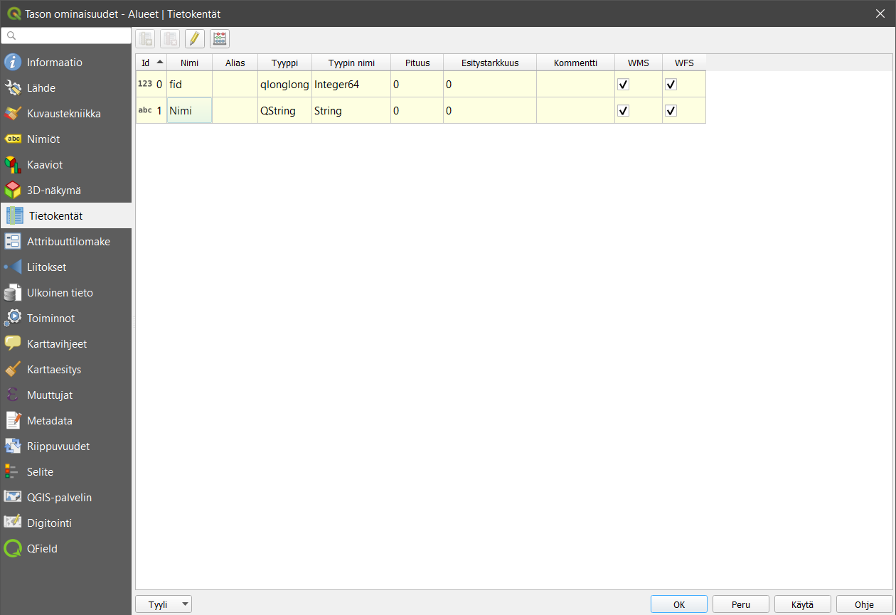

10 Harjoitus 9: Paikkatietoanalyysit
10.1 Harjoituksen sisältö
Harjoituksessa tutustutaan QGISin paikkatietoanalyysien tekoon. ## Harjoituksen tavoite
Opiskelijalla on perustiedot erilaisten paikkatietoanalyysien muodostamisesta QGIS-ohjelmistossa. ## Arvioitu kesto
40 minuuttia.
10.2 Valmistautuminen
Avaa uusi QGIS-projekti (Projekti > Uusi) ja tallenna se nimellä “QGIS-harjoitus 9”. Lisää projektiin seuraavat aineistot:
..kurssihakemisto/MML/YK_1M/HallintoAlue.shp
..kurssihakemisto/MML/YK_1M/TieViiva.shp
Karttanäkymän tulisi näyttää tältä:

Voit tarkistaa/muokata projektisi koordinaattijärjestelmän asetuksia (Projekti > Projektin asetukset > Koordinaattijärjestelmä) tai klikkaamalla oikeasta alareunasta löytyvää kuvaketta:

Kummatkin tavat avaavat projektin koordinaattijärjestelmän määrityslomakkeen. Tarkista, että järjestelmä on ETRS89/TM35FIN (EPSG:3067). Voit lisätä ongelmitta aineistot eri karttaprojektioissa. Monet analyysityökalut eivät kuitenkaan toimi tai antavat epätarkkoja tuloksia, jos analyysin aineistoilla on eri koordinaattijärjestelmät. Tällöin ne täytyy tallentaa uudelleen ja tehdä tallennusvaiheessa muunnos samaan järjestelmään. Tällä kertaa ongelmia ei tule, koska aineistot on alun perin tuotettu samassa koordinaattijärjestelmässä.
10.3 Vektorianalyysit
Tässä harjoituksessa on tarkoitus etsiä ne kunnat, joiden alueella kulkee suomalainen versio kuuluisasta Route 66 -tiestä. Lyhyesti harjoituksen kulku on seuraava:
Valitaan tieaineistosta ne tieviivat, joiden numero on 66.
Tehdään spatiaalinen analyysi kunta- ja tieviiva-aineiston kanssa, jonka myötä viiva-aineisto saa kunta-aineiston sisältämät tiedot.
Yhdistetään tieviivat kunnan nimen avulla.
Monista TieViiva -taso klikkaamalla tason nimeä hiiren oikealla ja valitse Monista taso. Avaa TieViiva kopio-tason ominaisuudet. Valitse Lähde-välilehti ja vaihda tason nimeksi Tie 66. Seuraavaksi suodatetaan tason kohteita eli määritetään mitä kohteita näytetään. Klikkaa Tie 66 -tasoa hiiren oikealla painikkeella ja valitse Suodata…. Syötä Suodattimena käytettävä lauseke -kohtaan seuraava lauseke:
“Tienumero” = 66
Saat kentän nimen suoraan lausekkeeseen Tietokentät-kohdasta tuplaklikkaamalla. Muuta uuden tason kuvaustekniikkaa, jotta se erottuu muista kartta-aineistoista.
Ristiinleikataan seuraavaksi tieaineisto kuntarajojen mukaan. Valitse ylävalikosta Vektori > Geoprosessointi > Ristiinleikkaus-työkalun (intersection), joka avaa QGISiin uuden ikkunan. Aseta syötetasoksi Tie 66 ja peitetasoksi HallintoAlue.

Suorita analyysi painamalla Suorita ja paina sen jälkeen Sulje. Syntyy uusi tilapäinen taso, joka näyttää karttaikkunassa samalta kuin alkuperäinen aineisto.
Kun vertaat eri tiestöaineistojen (Tie 66) ja ristiinleikkaustason ominaisuustietoja, mitä huomaat?
Luokittele aineisto kunnan nimen perusteella käyttäen kenttää Kunta_ni1 (Ominaisuudet > Kuvaustekniikka). Aktivoi Näytä kohteiden lukumäärä -toiminto (hiiren oikealla näppäimellä tason nimen päällä Tasoluettelossa). Tasoluettelossa luokittelun pitäisi näyttää suunnilleen seuraavalta (värit ja viivojen paksuus on sen mukainen kuin olet määritellyt):

Seuraavaksi voimme yhdistää erilliset tieviivat Sulauta (dissolve) -työkalun avulla. Valitse työkalu Vektori > Geoprosessointi > Sulauta. Aseta Syötetasoksi ristiinleikkauksessa syntynyt taso. Sulauta Ristiinleikkaus-aineisto kunnan nimen (tai numeron) perusteella: paina Dissolve field(s) -kohdan vieressä olevaa painiketta ja valitse kentäksi Kunta_ni1. Tallenna lopputulos esimerkiksi kurssihakemistoon haluamallasi nimellä (esimerkiksi tie66_sulautettu.gpkg). Paina Suorita ja sitten Sulje.

Voit kopioida aiemmin luodun tason tyylin helposti uudelle aineistoille. Valitse hiiren oikealla näppäimellä avautuvasta valikosta Tyylit > Kopioi tyyli > All style categories. Valitse äsken luotu taso ja Tyylit > Liitä tyyli > All style categories.

Kun lisäät vielä kohteiden lukumäärän laskennan päälle, niin lopputuloksen pitäisi tasoluettelossa olla seuraava:

Lopuksi voidaan laskea kunkin kunnan osuus tien 66 kokonaispituudesta (vaikkapa ylläpitokustannuksien jakamista varten). Lasketaan ensin kunkin sulautetun tieviivan pituus. Avaa ominaisuustietotaulukko, muuta taulukko muokattavaksi ja käytä tiedon laskinta samalla tavalla kuin pinta-alan laskemisen yhteydessä. Luo uusi kenttä, jossa on kunkin tieviivan pituus hyödyntämällä Geometria-kohdasta $length-funktiota. Kentän tyyppi voi olla kokonaisluku, jolloin saamme pituuden metrin tarkkuudella. Jos kentän haluaa ilmoittaa desimaaleissa, voi lukua pyöristää round-funktion avulla.

Lisää nyt uusi kenttä, jossa lasketaan prosenttiosuudet kullekin kunnalle. Teiden kokonaispituuden voi laskea Tilastollinen yhteenveto -paneelin  avulla. Valitse paneelissa tarkasteltavaksi tasoksi taso, jossa pituudet ovat, ja tämän jälkeen toisesta pudotusvalikosta pituus-kenttä. Näet Summa-kentässä tien kokonaispituuden.
avulla. Valitse paneelissa tarkasteltavaksi tasoksi taso, jossa pituudet ovat, ja tämän jälkeen toisesta pudotusvalikosta pituus-kenttä. Näet Summa-kentässä tien kokonaispituuden.

Nyt voit laskea Kentän arvojen laskin -työkalulla vielä yhden uuden kentän, pituuksien prosenttiosuuden.

Jos lausekkeessa halutaan välttää absoluuttisia lukuja ja tehdä siitä dynaamisempi, lauseke voi olla myös seuraava:
“pituus” / sum(“pituus”) * 100
Mikäli Pituus-kentän arvot muuttuvat, myös suhteellisen tieosuuden luku muuttuu.
Kun olet valmis, tallenna projektitiedosto kurssihakemistoon pikanäppäimellä CTRL + T (englanninkielisessä QGISissä CTRL + S) tai päävalikosta Projekti > Tallenna.
Psst! Koulutuksen jälkeen saat henkilökohtaista tukea Gispon tukipalvelusta. Lähetä kysymyksesi tai kommenttisi osoitteeseen tuki@gispo.fi!